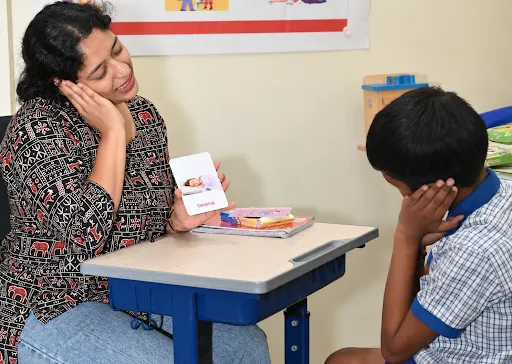
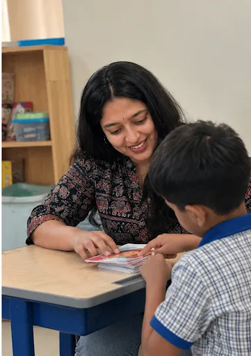
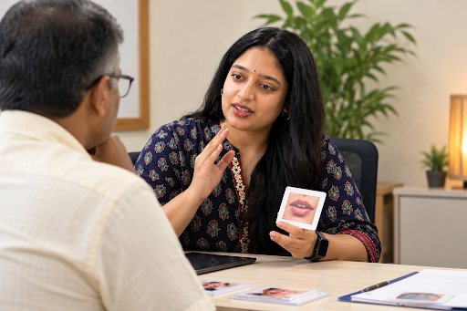
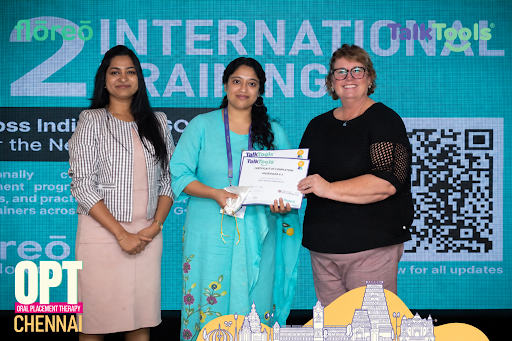
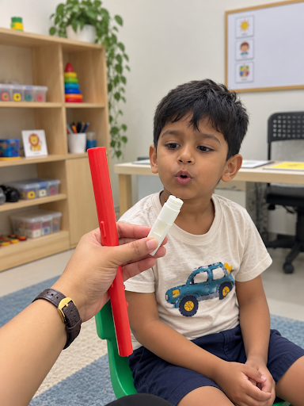

Led by Anukshana K S, Speech-Language Pathologist, certified in Oral Placement Therapy (TalkTools®). Delivering high-definition, evidence-grounded international tele-consultations across global time zones (US, UK, Middle East, Singapore & India) paired with unhurried concierge home visits in HSR Layout, Bengaluru.
Global Standards with Transparent Ethics: Detailed diagnostic baselines, clinical reports recognized by international schools & developmental teams, seamless digital kit coordination, and zero rushed sessions.

Clinical Activity & Play Milestones
Child-led communication & structured flashcard interaction
Speech Language Pathologist | OPT-Certified
High-touch, parent-coached speech therapy that bridges cultural nuances, bilingual developmental needs, and seamless global scheduling—whether you are based in California, London, Dubai, or Singapore.
Optimized slots accommodating GMT (UK/Europe), EST/PST (North America), GST (UAE/Gulf), and SGT/AEST (Singapore/Australia) with consistent weekly regularity.
Specialized guidance for NRI & expat children balancing native mother tongues (Hindi, Kannada, Tamil) with English school curriculum phonetics without sound confusion.
Diagnostic progress summaries and goal sheets structured for overseas pediatricians, international school IEP committees, and corporate health reimbursement policies.
Guidance on sourcing authorized TalkTools® sensory straws, horn hierarchies, and jaw blocks globally, complemented by weekly parent video review on WhatsApp.
Accepting direct international bank transfers, Stripe/Wise, and UPI with clear, itemized digital invoices provided after every session.
Every communication journey has a preferred setting. Experience unhurried home therapy in your living room or structured tele-practice tools.
HSR Layout & ~3 km Surrounding Radius
Direct clinical sessions conducted in the familiar comfort of the child's or adult's home. Lets young toddlers interact with their own toys, eliminates clinic travel stress, and enables real-world parent coaching.
Pan-India & International Availability
Structured digital clinical sessions leveraging acoustic feedback, screen-guided interaction, and comprehensive parent guidance protocols. Highly effective for school-age children, busy working professionals, and adults seeking therapy for stammering, articulation, and voice recovery.
Select your neighborhood near HSR Layout to verify whether it falls within the direct 3 km home session perimeter.
Grounded in naturalistic, play-based interaction that respects childhood pace without forced drilling or over-stimulation.

Therapy for children is never rigid drill work. Sessions utilize natural play interactions, colorful flashcards, sensory toys, and certified Oral Placement Therapy tactile cues to nurture joyful communication and articulation clarity right at your child's natural pace.
For toddlers aged 18 to 36 months who have fewer than 20 words, struggle with pointing/gestures, or experience frustration when attempting to communicate basic needs.
• Receptive vs. expressive disparity
• Joint attention & functional vocabulary
• Daily home routine coaching
Focus: Natural Family Coaching
Targeting sound substitutions, omissions, and motor-tactile positioning (e.g. swapping 'k' for 't', or lateral lisps). Incorporating certified Oral Placement Therapy cues.
• Tactile placement of tongue and jaw
• Phonological awareness games
• Intelligibility in school and conversations
Focus: Tactile Positioning & Clarity
Addressing sensory-motor feeding challenges, oral-motor chew and bite development, texture transitions (purees to solids), cup drinking/straw drinking, and gentle, stress-free mealtime routines.
• Oral-motor chewing, bite & tongue lateralization
• Sensory-based food chaining & texture progression
• Stress-free, responsive mealtime coaching
Focus: Responsive Feeding & Oral Motor Function
Empathetic support for autistic children, ADHD communication patterns, and pragmatic language differences. Respecting sensory limits and non-verbal expression.
• Augmentative & Alternative Comms (AAC)
• Turn-taking through intrinsic interests
• Neuro-affirming communication tools
Focus: Connection over Compliance
Dignified, collaborative clinical care addressing stammering, vocal fatigue in educators/tech leaders, and post-stroke speech restoration.

Specialized speech-language intervention for working professionals, university students, and stroke survivors. Using acoustic biofeedback, motor placement flashcards, and practical fluency shaping protocols, sessions rebuild vocal stamina, ease speaking blocks, and support neuro rehabilitation in an unhurried, private environment.
Empowering adolescents and adults with stuttering blocks, prolongations, and repetitions. We combine fluency shaping with cognitive-emotional deconditioning.
• Voluntary stuttering & ease techniques
• Workplace presentation desensitization
• Phone anxiety reduction exercises
Available: Online & In-Person Home Visits
For teachers, corporate managers, call specialists, and singers facing chronic hoarseness, vocal nodules, muscle tension dysphonia, or evening vocal exhaustion.
• Resonant voice therapy protocols
• Vocal hygiene & hydration ergonomics
• Semi-occluded vocal tract (SOVT) practice
Available: Acoustic Online Biofeedback
Structured clinical neuro-rehabilitation following stroke, traumatic brain injury (TBI), or neurological conditions. Rebuilding word-finding and speech motor control.
• Expressive word retrieval techniques
• Breath support & articulation precision
• Bedside / Home family communication training
Available: HSR Home Visits within 3km
Bridging motor-tactile cues with functional speech clarity and oral-motor coordination.
Structured jaw grading, tongue elevation, and lip closure techniques aligned with TalkTools® USA clinical standards for lasting speech clarity.

Anukshana K S receiving formal completion of specialized international clinical training in Oral Placement Therapy protocols, jaw hierarchy assessment, and tactile-motor speech cues.

Structured, play-aligned oral sensory-motor tools supporting abdominal breath support, jaw grading stability, and targeted lip and tongue positioning for effortless articulation clarity.
Oral Placement Therapy (OPT) is a motor-tactile approach utilizing structured, sensory-based tools and tactile cues to teach physical muscle positioning, jaw stability, and tongue elevation for clear speech sound production.
Designed for children and adults with speech sound placement difficulties, persistent articulation distortions, motor planning differences (such as apraxia), or low oral muscle tone affecting clarity.
OPT is an evidence-grounded adjunct to speech production, tailored strictly following individual clinical screening. It is never offered as a blanket or generic therapy, but as a purposeful bridge toward clear verbal communication.
Available as direct in-person home visits within ~3km of HSR Layout (Sectors 1–7) or via structured parent-coached tele-practice protocols with guided tactile exercises across Bangalore and India.
Anukshana K S conducts thorough phonetic, oral-motor, and acoustic assessments before proposing OPT exercises. Speak directly to understand session formats.
Prioritising calm clinical observation, authentic listening, and sustainable home carryover without rushed consultations.
Prioritising calm clinical observation, authentic listening, and sustainable home carryover without rushed consultations.
Speech and language differences are communicative opportunities that require gentle, systematic guidance. Led by Anukshana K S, our clinical practice prioritises calm clinical observation, authentic listening, and sustainable home carryover without rushed consultations or exaggerated therapeutic claims.
Certified in Oral Placement Therapy (OPT) and aligned with Rehabilitation Council of India (RCI) standards, Anukshana supports families in HSR Layout and across India with functional communication—empowering young children to connect without distress, guiding professionals past vocal tension or stuttering blocks, and assisting stroke survivors with dignified recovery.
Full degree qualifications, Rehabilitation Council of India (RCI) registration numbers, and Oral Placement Therapy certification documentation are transparently provided upon initial contact. We do not make guaranteed speed-cure promises or lock families into rigid packages. Therapy pace is continuously adapted to genuine biological progress.
Clear, transparent details for parents and adults taking the first step.
We schedule recurring consultations accommodating international time zones across North America (EST/PST), the UK/Europe (GMT/CET), the Middle East (GST), and Southeast Asia/Australia (SGT/AEST). Consultations occur over encrypted, high-definition video with interactive screen activities, digital mirror acoustics, and structured parent guidance. Between sessions, parents receive asynchronous WhatsApp video reviews for home carryover.
Oral Placement Therapy (OPT) utilizes specialized tactile tools (such as TalkTools® sensory straws, bite blocks, and bubble/horn hierarchies) to establish precise muscle stability and jaw grading for sound clarity. For families residing outside India (such as the US, UK, UAE, or Singapore), Anukshana provides exact part numbers and guidance on procuring official TalkTools® kits locally, followed by live, tele-coached step-by-step parent implementation.
Yes. Following formal evaluation and ongoing progress checkpoints, comprehensive clinical documentation detailing baseline assessments, phonetic inventories, standardized goals, and suggested classroom accommodations can be generated to coordinate with overseas educational therapists and pediatricians.
Home visits are dedicated strictly within approximately 3 km of HSR Layout (Sectors 1–7, Teachers Colony, Agara Lake, and nearby Haralur/Bellandur borders). Sessions are conducted directly in the child's natural environment with generous travel buffers to ensure punctual, unhurried 45–60 minute sessions.
We accommodate international wire transfers, Stripe/Wise links (USD, GBP, EUR, AED, SGD), as well as direct UPI/NEFT for Indian bank accounts. Fees are clearly quoted prior to scheduling with zero hidden administrative charges.
For children: If by 18 months your child uses fewer than 6–10 words, struggles with joint attention, or shows frustration; or by 24–36 months is unintelligible to familiar listeners. For adults: If vocal fatigue impacts your profession, or stuttering/blocks cause communicative avoidance, a comprehensive screening brings clinical clarity and individualized guidance.
Whether you are noticing early speech delay, seeking Oral Placement Therapy (OPT) guidance, or looking for vocal strain relief, Anukshana K S is here to guide you with care and clinical expertise.
Quickest Direct Channel
WhatsApp: +91 89518 88573
Direct Phone Inquiries
+91 89518 88573
Clinical Case Documents & Reports
anukshana.slp@gmail.com
Physical home visits are strictly limited to ~3 km radius of HSR Layout, Bengaluru (Sectors 1–7). Certified in Oral Placement Therapy (OPT). Tele-therapy available across India.
Led by Anukshana K S, Speech-Language Pathologist, certified in Oral Placement Therapy (TalkTools®). Delivering high-definition, evidence-grounded international tele-consultations across global time zones (US, UK, Middle East, Singapore & India) paired with unhurried concierge home visits in HSR Layout, Bengaluru.
Global Standards with Transparent Ethics: Detailed diagnostic baselines, clinical reports recognized by international schools & developmental teams, seamless digital kit coordination, and zero rushed sessions.